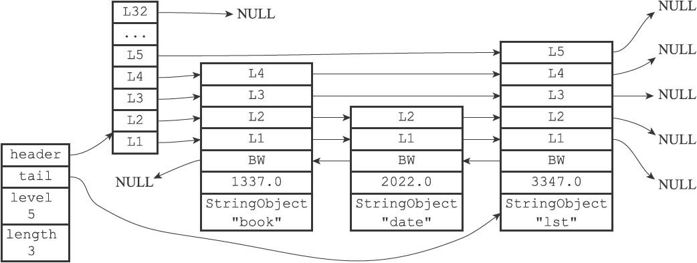

redis基础数据结构
redis中的数据对象有5种,但是这并不是redis中真正的数据存放方式, 只是对底层的数据存放结构进行了封装的对象
基础数据结构
redis的几种基础数据结构是redis中的最重要的部分, redis后续的几乎所有功能的设计和实现都依赖于此
sds简单动态字符串
对应的上层对象是 字符串
数据结构
具体的数据结构如下:
1 | typedef struct sdstr{ |
sds是字符串对象的底层实现之一
sds的特性
赋值操作会统计字符串的长度然后将字符串存入buff字符数组里面,同时设定长度和使用的长度
例如 “hello”这个字符串的存储结构如下
1 | { |
修改的时候会比较麻烦,分为两种情况
一是由段字符串变长:例如:由”hello”变为”hello,redis”.
这个时候系统会检查原本的sds字符串是否有空余空间,剩余空间为0
会分配等同于修改后字符串长度的剩余空间给sds,这个时候字符串的free属性会变为11,然后执行sdscat()
这个时候buff会变为[‘h’,’e’,’l’,’l’,’o’,’,’,’r’,’e’,’d’,’i’,’s’,’\0’]
然后将字符串长度len修改为11
最终结构如下
1 | { |
ps:当长度小于1M是翻倍扩容,超过1M时是以1M为标准定量扩容
二是由长字符串变短
例如:由”hello,redis”变为”redis”,这个时候会释放多余空间,同时把free值设为多出来的空间,以便下次使用方便
修改后的结构大概如下
1 | { |
需要释放的时候可以手动调用函数来释放空间
为什么要使用sds?
- sds可以杜绝缓冲区溢出的问题,获取字符串长度复杂度为常数
- 二进制安全,sds使用len属性来判断字符串的结束
- 减少字符串修改时的内存重分配次数
链表和quicklist
数据结构
抄袭自redis的源代码
1 |
|
换成形象点的json的形式就是如下
1 |
|
链表是列表对象的底层实现之一(version 3.2 之前)
链表在redis中主要负责的是存储和维护某一类对象,所常用到的操主要有遍历,修改等
链表在redis中使用极为广泛,redis的事务,发布与订阅,服务器中维护的redisClient信息等都是用链表结构进行的存储
quicklist
redis在3.2版本新加入了quicklist数据结构作为list的底层实现
数据结构
以下代码来自redis源码
1 |
|
quicklist特性
quicklist本身是一个双向无环链表，它的每一个节点都是一个ziplist。为什么这么设计呢？
- 双向链表在插入节点上复杂度很低，但它的内存开销很大，每个节点的地址不连续，容易产生内存碎片。
- ziplist是存储在一段连续的内存上，存储效率高，但是它不利于修改操作，插入和删除数都很麻烦，复杂度高，而且其需要频繁的申请释放内存，特别是ziplist中数据较多的情况下，搬移内存数据太费时！
可以这么理解
一个quicklist内部包含有多个ziplist, 每个ziplist里面又可以包含多个数据节点,
例如: [1,2,3,4,5,6,7,8,9]
上面这个链表的存储如果用quicklist来存储就可以分为3个ziplist
每个ziplist又有3个数据节点,[[1,2,3],[4,5,6],[7,8,9]]
主要目的还是为了在时间和空间上面取得一个平衡,至于每个ziplist分多大可以自定义配置
字典
数据结构
1 |
|
hash 使用json格式表示大概如下
1 | { |
字典是数据库的底层实现
整体数据结构由dict持有2个dictht，
其中一个dictht[1]在rehash时候使用，dictht[0]中用来存储数据
持有一个dictEntry组成的数组，每个dictEntry保存一个键值对
hash过程
采用hash函数对键进行哈希配合dictht的sizemask计算出来索引值
index = hash(key) & sizemask然后将键值对存入哈希表节点
ps: 这个过程跟redis中计算键所对应的slot的方法相似
解决键冲突
redis使用链地址法(separate chaining)
来解决键冲突,当两个键的index值相同时,会把第二个键放到第一个键的前面,查询时对这个index的哈希节点链表进行遍历
rehash
当哈希表的负载因子(load factor)大于设定值时(平时为1,在BGREWRITEAOF时为5),哈希表会进行rehash操作
rehash采用渐进式的方式进行执行,具体流程就是把ht[0]里面的数据重新进行哈希计算放到ht[1],此时的哈希查询操作两个表同时提供服务,写入操作则只有ht[1]提供,这样ht[0]处于只减不增的状态,最终当ht[0]里面的所有数据都被转移到ht[1]时,rehashidx被设为-1,表明rehash结束,删除ht[0],并将ht[1]设为ht[0],同时重新分配新的ht[1]
ps:负载因子 = used /size;
跳跃表
数据结构
1 | //跳跃表 |
跳跃表json形式:
1 |
|
跳跃表图示:

跳跃表是有序集合的底层实现之一
跳跃表中的头结点不计算在length长度之内,跳跃表的节点排序按照分值从小到大排序
每次创建新节点的时候,redis会根据幂次定律随机生成一个1-32的层数作为level数组的大小
每个节点都有指向表尾方向的前进指针和之前表头方向的后退指针
这两个指针可以让程序方便的遍历所有节点,层的跨度用于记录两点之间的距离
跨度可以用来计算rank值.节点的分值是一个double值
节点的对象是一个指针,指向一个保存着sds字符串的字符串对象(下一节讲redis对象)
跳跃表通过每个zskiplistNode来保存每个元素的信息，元素的键就是obj的指针指向的对象，对应的分值就是score字段
整数集合
数据结构
1 |
|
顾名思义整数集合是用来保存整数值的抽象数据结构
集合中不会出现重复元素
contents数组中保存的整数值有小到大排列
length等于contents的长度
虽然contents的定义是int8_t 但实际上contents的值类型由encoding决定
升级
当一个新元素超过原来整数集合encoding定义的值的类型时,会进行升级
升级结果会使集合的encoding变成所有数组中元素的值最大的数据类型,并且不支持降级
例如:有一个整数集合[1,2,3],本身的编码为int8,现在增加一个300的数字进该集合
会导致集合的编码升级为int16,这个时候列表的大小由8x3=24 变为 16x4=64
即便int8可以存储前三个值,但是为了简单起见,仍然会为集合中每一个元素分配同样的空间
压缩列表(Ziplist)
压缩列表被用作列表键和哈希键的底层实现
压缩列表属于特殊的结构,是一种数据存储的方式,目的是为了节约内存,是一种采用特殊编码的连续内存块组成的顺序型(sequential)数据结构.
大致结构如下:
| zlbytes | zltail | zllen | entry1 | entry2 | … | zlend |
|---|---|---|---|---|---|---|
| 总长度 | 偏移量 | 节点数量 | 节点1 | 节点2 | … | 结束 |
每个压缩列表节点由如下三部分组成
| previous_entry_length | encoding | content |
|---|---|---|
| 前一节点的长度 | 记录content的类型和长度 | 节点的值 |
一个ziplist示例:
1 | { |
如果前一个节点长度小于254字节,previous_entry_length会使用1字节空间保存这个长度,
如果大于254字节,将使用5字节长度保存这个值,这个机制会引起”连锁更新”
连锁更新: 假设现有连续的三个压缩列表节点l1,l2,l3,长度分别为 253,253,253,现在往第一个节点前添加一个长度超过254的节点,这个时候l1要给previous_entry_length分配5个字节来存储长度,所以列表本身长度会变为257,这将导致l2也需要5字节存储l1的长度,l3也会产生同样的变化,这样由一个列表操作引起的一系列更新操作成为连锁更新